Manuel utilisateur : Les Bassins de rétention
L'exemple de calcul de dimensionnement d'un bassin de rétention pluviale qui suit correspond à l'exemple « Démo Retenue ». Pour l'ouvrir, il faut cliquer sur ouvrir dans le menu « Bassin de rétention »,
ensuite sélectionner « Démo Retenue » dans la fenêtre qui vient d'apparaître,
et bien sûr cliquer sur le bouton « OK » pour valider votre choix.
Pour saisir les données caractéristiques du bassin versant, on peut :
soit entrer directement les valeurs de la surface et du coefficient d'apport du bassin (en approximation, on l'assimile au coefficient de ruissellement),
soit sélectionner un bassin versant en cliquant sur le bouton du même nom.
Dans ce cas, on bascule vers le module « Bassin versant ». C'est la solution utilisée pour notre exemple. On peut soit créer un nouveau bassin versant (cf. chapitre « 3.2 »« - »« Les Bassins Versants » ), soit ouvrir un travail fait par le passé qu'on a enregistré. Pour notre exemple, nous avons ouvert l'exemple « Démo BV urbain » .
Pour retourner vers le module « Bassin de rétention », il faut cliquer sur le bouton « Retour au bassin de rétention » et valider le transfert de données :
![[Important]](chmicons/important.png) | Important |
|---|---|
Lorsqu'on veut importer des données du module Bassin versant, il faut que le bassin versant soit de type urbain. |
En important les données de l'exemple « Démo BV urbain », nous avons une surface de 24 ha et un coefficient d'apport de 40% :
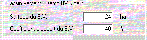
Ces données vont de pair avec les données du bassin versant, puisqu'elles sont soit saisies directement, soit transférées en même temps que les données du bassin versant en utilisant l'option « Sélection d'un bassin versant ».
Pour notre exemple nous avons importé les coefficients de Montana de l'exemple « Démo Bassin Versant » :
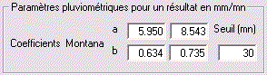
Ce mode de calcul est disponible dans Hydrouti, dès lors qu'on utilise l'option « Sélection d'un bassin versant ». On bascule alors vers le module « bassin versant », où le logiciel calcul l'hydrogramme résultant du bassin versant.
Le volume de stockage se déduit aisément à partir de l'hydrogramme puisqu'il résulte de l'intégration sur le temps du débit à l'exutoire moins le débit aval admissible. Autrement dit, sur le graphique disponible pour le calcul par la méthode de l'hydrogramme, ce volume de stockage est représenté par l'aire verte.
Dans notre exemple, nous obtenons le volume de stockage suivant : environ 1 796 m3.
Avec cette méthode, on compare la pluie tombée sur le bassin versant, en considérant des courbes intensité - durée - fréquence, et le débit de fuite. La « différence » représente la lame d'eau maximale à stocker.
On peut soit résoudre graphiquement le problème, soit le résoudre complètement de façon numérique.
A partir de la courbe « intensité - durée - fréquence » qui caractérise une pluie, on calcule la hauteur spécifique H :
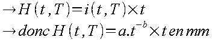
|
a, b |
coefficients de Montana |
|
t |
le temps en heures |
En notant le débit aval admissible Qs, le débit aval admissible spécifique qs s'exprime ainsi :
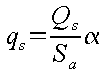
|
qs |
en mm/h |
|
Qs |
en l/s |
|
Sa |
la surface active (surface X coefficient d'apport du BV) en ha |
|
α |
coefficient d'unité égal à 0,36 |
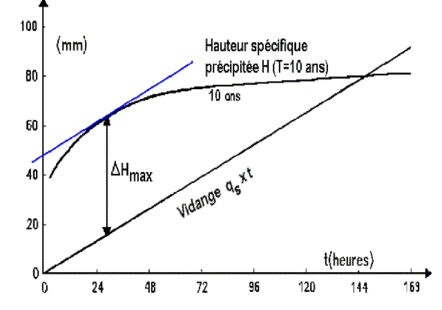
Il suffit alors de multiplier la hauteur ΔHmax, lue sur le graphique, parfois la surface active et un facteur de 10 pour les correspondance d'unités:
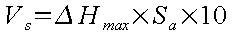
|
Vs |
en m3 |
|
ΔHmax |
en mm |
|
Sa |
en ha |
Dans le cas de notre exemple, nous trouvons une hauteur ΔHmax égale à 11.3 mm environ :
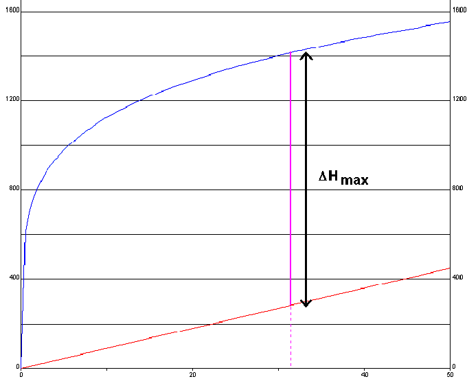
Étant donné que la surface active est égale à 9.6 ha, le volume de stockage est d'environ 1085 m3.
Cette fois-ci, au lieu de déterminer graphiquement la hauteur ΔHmax, on procède à un calcul numérique. Pour trouver le maximum de la fonction
H – qs.t
il suffit de résoudre l'équation suivante :
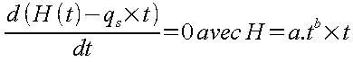
soit

On en déduit le temps tmax pour lequel ΔH est maximal (résultat en heure) :
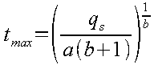
Finalement
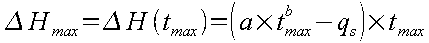
Pour obtenir le volume de stockage, il ne reste plus qu'à multiplier cette hauteur par la surface active et la facteur 10 de correspondance d'unités:
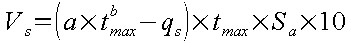
|
Vs |
en m3 |
|
ΔHmax |
en mm |
|
Sa |
en ha |
|
tmax |
en h |
Dans notre exemple, le temps tmax est égal à 76 minutes environ, la hauteur ΔHmax est égale environ à 27 mm et le volume de stockage est d'environ 1900 m3.
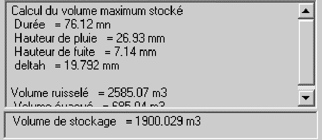
Lorsque l'on clique sur le bouton « Méthode des pluies », il apparaît une fenêtre avec un message d'avertissement :
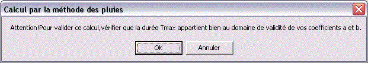
En effet, après le calcul d'Hydrouti, il faut vérifier que le temps tmax appartient bien aux domaines de validité des deux jeux des coefficients a et b. Si ce n'est pas le cas, le cal-cul ne doit pas être validé.
Pour le calcul, le jeu de paramètres appliqué est sélectionné selon que l'instant tmax (noté Durée dans la fenêtre de résultats) est inférieur ou supérieur au seuil.
Si tmax est supérieur à la borne supérieure du second jeu de paramètre, il est recommandé de reprendre le calcul avec des paramètres de Montana adaptés.
Pour la fenêtre de construction graphique, deux options sont disponibles :
Schéma.
Graphique.
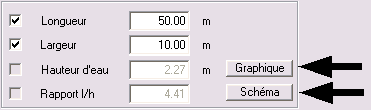
Pour cette méthode, lorsqu'on clique sur le bouton « Graphique », Hydrouti trace un histogramme où sont représentées les débits à l'exutoire du bassin versant et les débits de vidange.
La surface verte représente le volume écrêté, l'histogramme brun représente la partie de la courbe de vidange, limitée dans le temps sur la durée de l'hydrogramme entrant.
Le bouton schéma n'est disponible que lorsqu'on a coché deux des quatre cases (longueur, largeur, hauteur d'eau et rapport l/h), car Hydrouti dessine alors le bassin de retenue en 3D. Il lui faut donc au moins deux de ces quatre valeurs pour pouvoir dessiner le bassin.
La représentation est schématique, mais cela permet de déterminer les caractéristiques géométriques du bassin, à savoir : longueur, largeur et hauteur. La figure précédente est le résultat obtenu pour notre exemple en considérant la méthode des pluies et en choisissant les paramètres suivants :
Pour une longueur de 50 m et une largeur de 10 m, la hauteur d'eau est de 3,80 m.